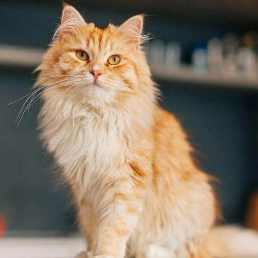
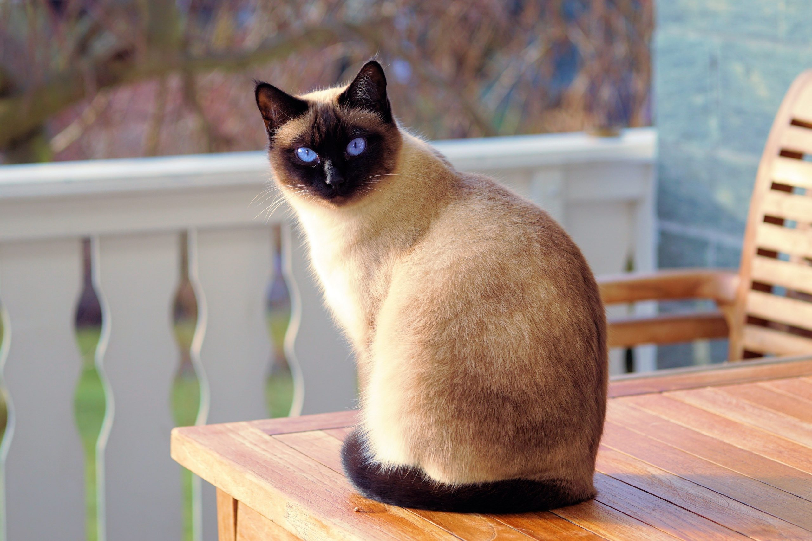
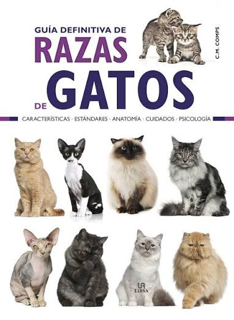
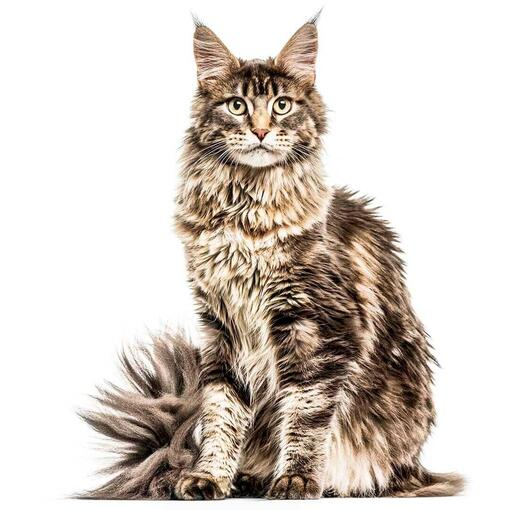
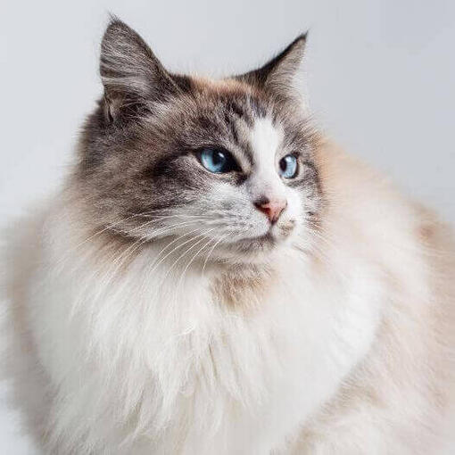
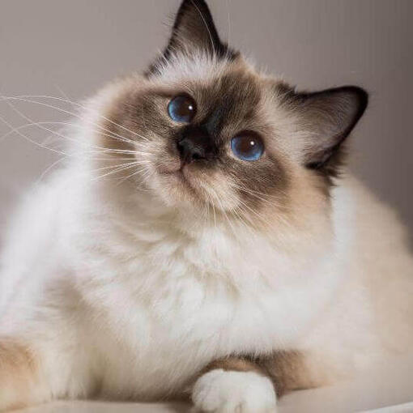

Razas populares
Listado de las razas más destacadas y queridas:
- Gato Persa

- Gato Siamés

Hola, esta es mi página sobre el mundo de los felinos
Los gatos son animales domésticos muy populares en todo el mundo. Existen diversas razas y tipos de gatos, cada uno con características únicas.

Listado de las razas más destacadas y queridas:


Otras opciones de felinos:



A continuación una ficha técnica comparativa:
| Raza | Origen | Peso Medio | Esperanza de vida | Nivel de energía |
|---|---|---|---|---|
| Persa | Asia | 3.5 - 5 kg | 12 - 17 años | Bajo |
| Siamés | 2.5 - 4 kg | 15 - 20 años | Alto | |
| Maine Coon | EE.UU. | 6.0 - 11 kg | 12 - 15 años | Medio |
| Ragdoll | EE.UU. | 4.5 - 9 kg | 12 - 17 años | Bajo |
| Birmano | Birmania | 3.0 - 5.5 kg | 12 - 16 años | Medio |
| Nota: Los datos de peso y esperanza de vida son orientativos y varían según la alimentación y cuidados veterinarios específicos. | ||||
Razas tranquilas como el Gato Persa o el Ragdoll se adaptan muy bien a espacios interiores.
Para mostrar imágenes con su descripción semántica utilizamos la etiqueta
Puedes verlos en la sección de Datos XML o abriendo directamente el archivo original.